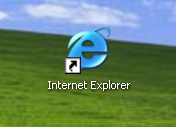

This is probably not the page you're intending to view right now. You've tried to go to a website, and in turn, instead of viewing all of its content, have been held back by this page. Why are you seeing it? There are a few reasons, but we're going to get you back up and running in no time.
The problem, you see, lies within something called your internet browser. What is an internet browser? It's what you're using to view this website right now. It probably looks something like this icon on your computer:
When you click that icon on your desktop, the internet loads. Simple enough, right?
Your internet browser is outdated. In fact, it was created over six years ago! Over those six years, bad things have happened. It's become insecure, allowing even more viruses to enter your computer, and it won't display any website right anymore!
That sounds terrible, but today, we're going to move you to a new browser. It'll only take you a few minutes, and it'll be better than ever before. There are lots of great browsers out there. You can pick! All of them are great. Head over to here to pick a new browser.
So long, now! I hope we never have this problem again.